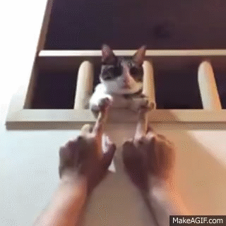

当我写这个作业的时候我在想什么

这只喵好萌好萌好萌呀！简直能看上一下午！——题记
好像说完这只喵就没有什么可说的了。。。那么就简单写 一下我在写这个作业的时候的感受吧。
其实一开始让我不用轮子写前端的时候我是拒绝的，因为你不能让我写，我马上就去写。第一我要试一下，因为我不愿意写完之后再加一些特效上去，界面“duang”一下，很酷炫，很舒服；这样出来之后用户一定会骂我，根本就没有这样的网页，就证明上边那个是假的。后来我亲自写了一下，发现这确实是能写的，感觉还不错。后来我写完的时候也告诉老师一定不要让下一级用轮子，因为我要让他们知道，我进了一个大坑，你们也要进来。
其实不管怎样，这次训练无疑提高了我的前端代码能力。在此之前，我只会用简单的轮子的拼凑来写一些看起来很炫酷的网页；但是经过这次训练，我发现自己在没有轮子的情况下也能写出比较酷炫的页面。希望我能够经过这个小学期的训练，能够把之前不怎么扎实的基础好好的夯实一下；也希望我能够在之后写出自己的轮子。